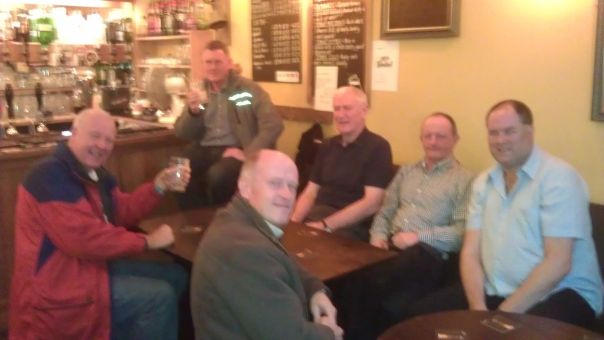
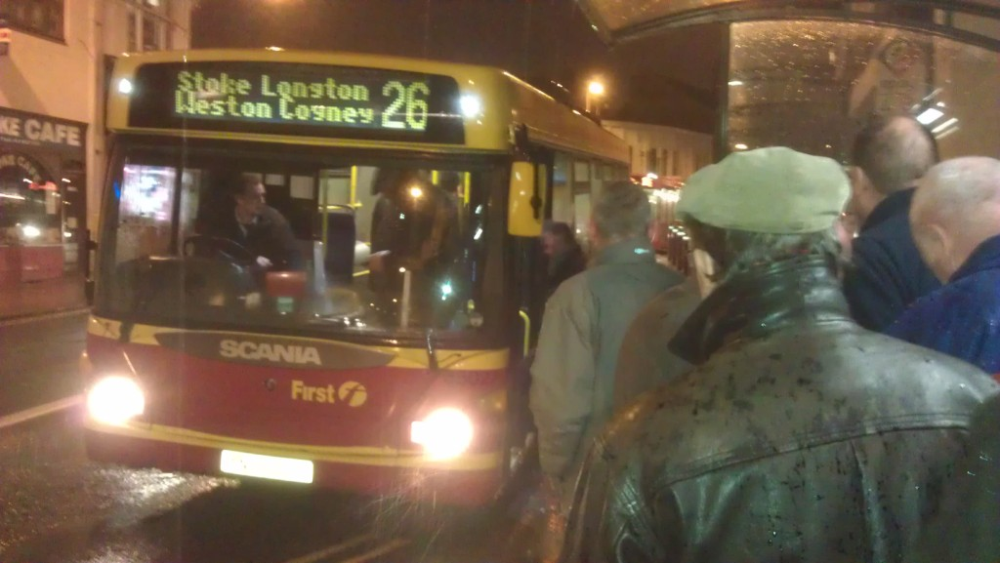
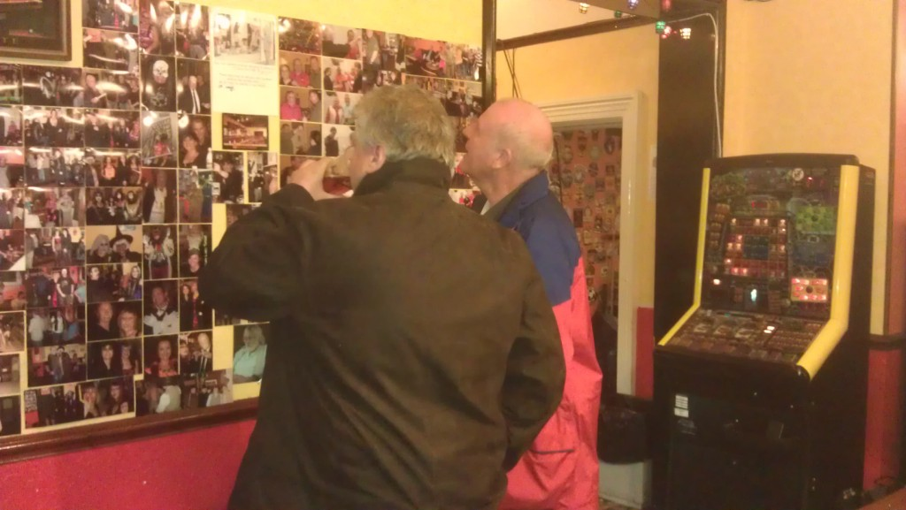
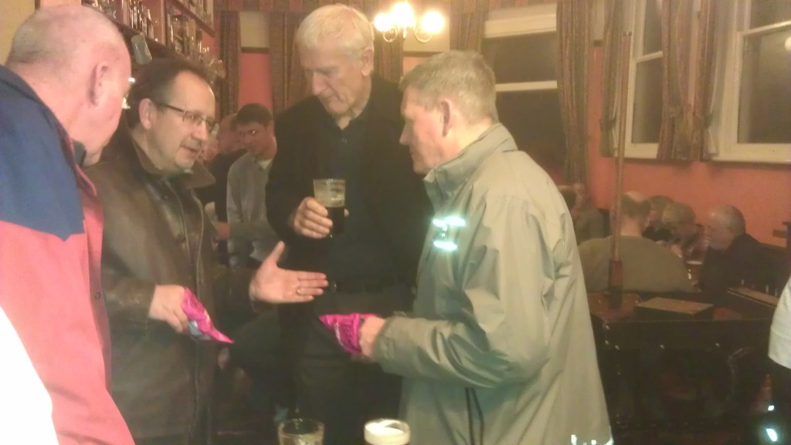
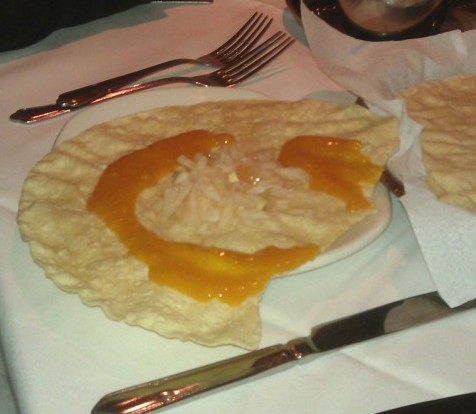
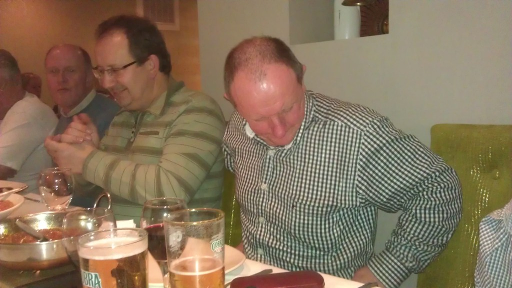
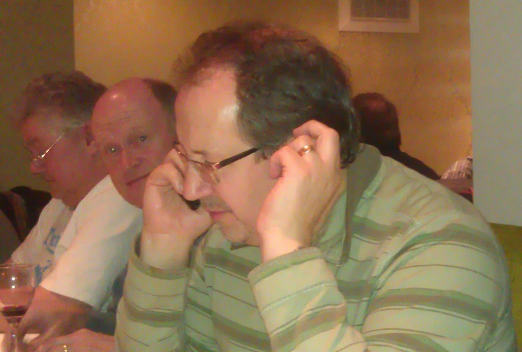
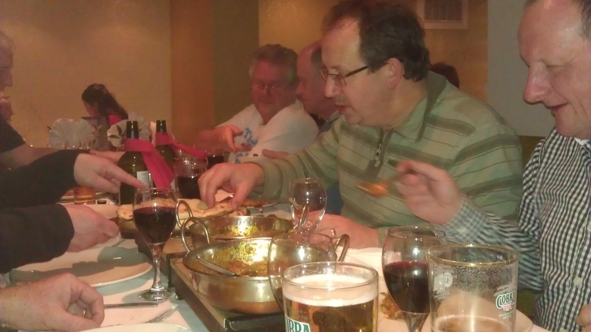

ROSH FOR NOSH - FORSBROOK Friday 27th January 2011
Up for roughing it were:
Yupmeister, Mid Week Tone, Granpop Bill, Keithee's up for it, JayCee, Huge, Spikelett, Ali Gee, Tim Mothy, Corky - Graham Cork and BeD - Brian Edwards.
Despite confirming for the first time Scott-ee Free failed to show or make contact. Craigee and Richee showed their faces for a split second but opted for a smoother run in Stoke. ‘It’s too rough in Longton youth’.
Let down by a tram trip that got derailed, an alternative local do was quickly assembled, including stops at a recently acquired Lymestone Brewery pub in Stoke, a local Titanic pub, a CAMRA 'pub of the year' in Longton and the renowned Roshni Indian restaurant in Forsbrook.
The Sutherland Arms, a recently renovated pub in London Road, Stoke was our meeting point. A friendly little pub with Lymestone ales on tap, including ‘Stone the Crows’, a dark ale, and ‘Stone Cutter’, a lighter, crisp ale; much clearer than this cloudy photo.

Granpop Bill and Huge were there bang on time, sitting under the watchful gaze of a bulldog, and were soon joined by Yuppy, Jaycee, Mid week Tone and finally Mothy. Train delays at Kidsgrove delayed Corky who arrived frustratingly 20 minutes later; but he soon caught us up on the ale front and began to calm down. Keithee had also got delayed but opted to meet us later in the White Star where Ali G, Brian and Spike were rendezvousing.
‘You must take a peek at the toilets before you go’, suggested Yuppers. One for the mystery clues perhaps. 'Swing low, sweet chariot' came to mind and discussions moved to football and watching games on sky. ‘I’ve got this mate right’, said Corky, ‘who can fix you up with …………..’, ‘he’s from Halkidiki’.
We moved swiftly on to the White Star where we grouped and waited for Craigee and Richee to arrive. Turning up as we were about to move on, they couldn’t be persuaded to join us. ‘It’s too rough in Longton youth, we conna be bothered’, came the excuses. Could this be their first ever refusal? They were up to something !!! Could they be sorting out the alternative squarry do this early in the year????? Aha.

It was lashing down outside but thankfully the bus shelter was only 20 yards away. Almost on time at 5.36pm, and at £2 to Longton we headed off, arriving at Longton’s bus station just ten minutes later.
The rain had now stopped; well it would do wouldn’t it?, as we set off passing the town hall which Mid week Tone wanted to knock down, and on to the infamous Congress.
We were met with some extremely polite folk and a good selection of ales, some of us opting for the Gladstone ale. Blue Monkey was considered by Jaycee but he didn’t want to be the only one asking for it.

The high social activities at the pub was clearly evident with pool tables, skittles and darts being available. It was far too energetic for us, so we stood around the pool table instead, eyeing up the hundreds of photos adorning the wall.
‘It’s one of the biggest traps I’ve ever seen’, admitted Ali G, as he stepped out of the toilets. 'There's a huge sun trap in the rear yard too', said Yup, 'but not tonight'.
Several bags of crisps were handed out by Jaycee turning everyone's hands pink.

‘He looks like Salman Rushdie’, said Yup, looking towards a chappie sitting quietly in a corner. ‘Dunna wurry, said Ali G, ‘I’ve put a fatwa on him’. ‘Yer fat ma?’ asked Yuppers, ‘what der yer wunna do that for?’.
It was time to move on and 2 taxis were ordered to draft us up to Forsbrook, and the Roshni Indian Restaurant. B.Ed left us to it as we jumped aboard.
The Roshni, on the Cheadle Rd out of Blythe Bridge, was full, except for our table which was set out neatly waiting for our arrival. 10 cobras and 3 bottles of wine were immediately ordered along with 15 poppodoms.

Jaycee set about making patterns on his poppodom before smashing it up. Huge's glasses mysteriously disappeared for a while. 'I'm sure I had them earlier', he said. And as mysteriously as they disappeared, they turned up again.

The final bill came to around £22.50 including a tip but with a £20 discount obtained by Yuppers with the aid of vouchers printed off from the thisisstaffordshire web site. 'Taxis for 10 please'.


2 taxis returned us back to Stoke where Corky found the railway station, Huge and Keithee were picked up by Huge's wife and mother in law, kindly dropping Keithee off in Sandbach, and the rest of us found the Glebe. All very complicated. ‘I’ve had more than I can take’, admitted Jaycee, and even Granpop Bill sunk to a half pint only. Don't tell Corky.
Pam collected Spike as the rest of us caught yet another taxi to Clayton and the Westlands. Who was last out??
It was the end of yet another excellent local squarry evening, with good pubs and superb nosh at the Rosh. The feedback received later also confirming that their food and service was first-rate.
Cheers
Yuppers (enjoy yer Nosh)